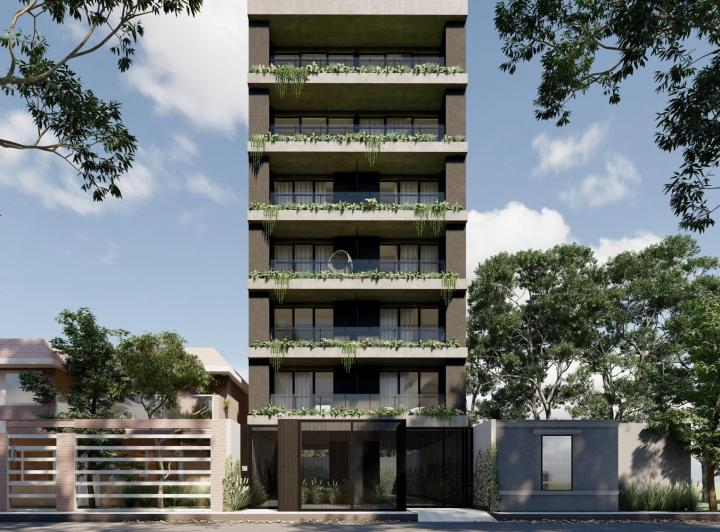
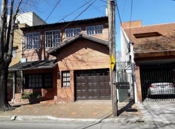
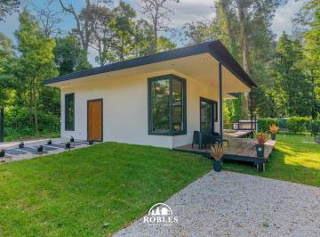
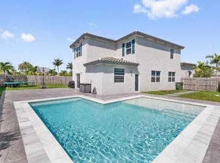
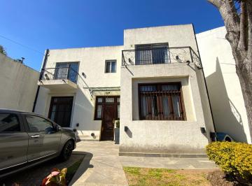

Aca podes encontrar la casa de tu sueños, Descubrila y contactate con nosotros!

Edificio en venta zona centrica calles 25 de mayo 780
Edificio en venta de seis pisos, ideal para inversión. Cuenta con múltiples unidades distribuidas en varios niveles, estructura sólida y excelente potencial de renta. Ubicado en una zona estratégica, con fácil acceso y proyección de valorización.

Casa en venta en Buenos Aires
Casa sólida y funcional, desarrollada en dos plantas, con fachada de ladrillo a la vista y cochera cubierta. Cuenta con ambientes amplios y bien iluminados, buena distribución y detalles clásicos que aportan carácter. Ubicada en un barrio tranquilo, con fácil acceso a transporte, comercios y servicios.

Casa en venta a 15 minutos de paraná
Casa moderna de una planta, ubicada en María Luisa, a pocos minutos de la ciudad de Paraná. Rodeada de entorno verde y tranquilidad, cuenta con diseño funcional, ambientes luminosos, amplios ventanales y espacios integrados. Ideal para quienes buscan confort, naturaleza y cercanía a la ciudad.

Hermosa casa a la venta a pocos minutos de la gran ciudad
Casa moderna de dos plantas, ubicada en Oro Verde, a pocos minutos de la ciudad de Paraná. Cuenta con amplios ambientes luminosos, diseño funcional y excelente calidad constructiva. Dispone de patio con piscina, ideal para disfrutar al aire libre, en un entorno tranquilo y de fácil acceso.
casa a la venta en zona costanera alta de la ciudad de paraná
Hermosa propiedad de estilo clásico con fachada de ladrillo a la vista y gran iluminación natural. Cuenta con un amplio frente, jardín, cochera cerrada, ventanales con persianas y detalles arquitectónicos de categoría. Una casa sólida, segura y lista para entrar a vivir en una zona residencial tranquila.

casa a la venta en sauce corrientes
propiedad de estilo moderno y funcional, ideal para familias. Cuenta con una fachada de líneas limpias, dos balcones al frente con rejas artísticas y amplios ventanales que aseguran una gran ventilación y luminosidad natural. Posee entrada para vehículo, jardín delantero y terminaciones en madera que le aportan calidez. Ubicada en una zona tranquila, perfecta para disfrutar del descanso y la comodidad.